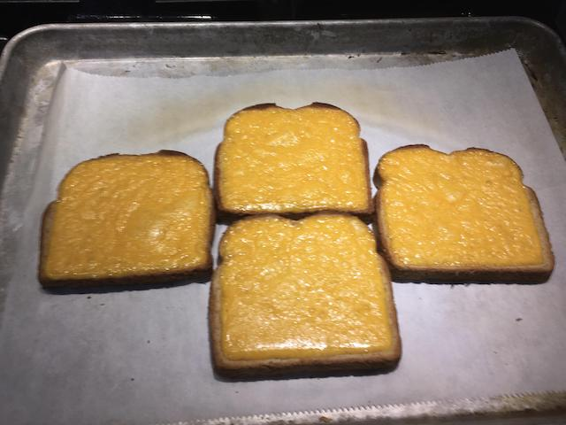

Matchu's Toasty Cheese Sandwich

Description
Let's be serious. You don't have time to mess around during lunch.
Jump out of online meetings, throw a few of these into the oven, toast and chow-down.
Then get back to work! Serves 1-2.
Ingredients
- Cheap, pre-sliced bread. Not wonder bread though,
the things have to survive long enough for the cheese to melt people!
- Pre-sliced cheddar because, again seriously, you don't have time
Equipment
- Something that can toast stuff, but not your toaster. Seriously, don't do that
- Baking sheet (optional)
Preparation
- Preheat oven to broil, leave the door cracked-open while cooking
- Throw slices on a baking sheet or, if you like them crunchy and don't mind making a mess,
directly on the rack
- Cook until cheese is melty, bread is toasty, but not until the fire alarm goes off
- Remove and allow to cool for 2-3 minutes while you dial into the next meeting
Enjoy with your work mates. Don't chew with your mouth open.